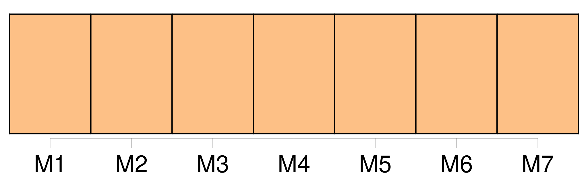
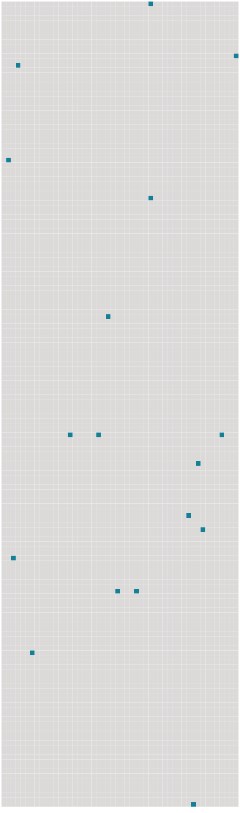

Longueur nb maillons : 17 mentions |
  |
À sa mort, trois ans plus tôt, j'étais déjà grande et forte et ma mère avait décidé que je resterais à la garde des jumeaux, et qu' [on] m'adjoindrait une femme de ménage pour m'éviter les gros travaux. [25 phrases] Firmin n'avait qu'un an de moins que moi, mais il était si petit et si faible qu' [on] l'eût dit beaucoup plus jeune. [2 phrases] Firmin m'apprenait le soir ce qu' [on] lui avait enseigné pendant le jour, à l'école. [50 phrases] Et [qui] sait si je rentrerai jamais dans cet appartement d'où je suis sortie un jour, blessée de telle sorte que je vais en porter la marque toute ma vie. [18 phrases] Cependant, elle se penche sur moi pour m'embrasser, mais c'est du bout des lèvres, [on] dirait même avec dégoût. [47 phrases] Au dehors rien ne bougeait, et dans la maison, Manine et Clémence dormaient d'un sommeil qu' [on] eût dit sans souffle. [39 phrases] Il y a les chemins qu' [on] ne voit pas mais dont [on] devine le tracé capricieux au passage des charrettes. Il y a encore les troupeaux si paisibles et si lents à se mouvoir, qu' [on] peut croire que c'est le paysage lui -même qui se déplace. [11 phrases]
Il disait : [30 phrases]
Il me semble qu'en me privant de Firmin et des petits pendant les vacances [on] m'a privée d'une chose nécessaire à la vie, et que je ne tarderai pas à en mourir. [8 phrases]
Je crains de lui dire que si [on] a été trop bon pour tante Rude, en retour elle n'est guère douce aux autres. [11 phrases] Tout le jour elle cria et repoussa de ses petites mains l'horrible chose qu' [on] voulait l'obliger à mettre dans sa bouche. [14 phrases] Cette succion me fit un mal atroce, [on] eût dit qu' [on] m'arrachait de fines lamelles de chair ayant leurs racines dans le fin fond du cœur. [24 phrases] Je vivais avec eux, je savais [où] les prendre à toute heure, et plus rien de ce qui se passait chez nous ne pouvait m'être étranger maintenant. [72 phrases] Le ciel commençait à s'éclairer, et déjà [on] pouvait compter les arbres qui bordaient la route. |
 |
La ressource peut être téléchargée sur la page Ortolang
Si vous avez des questions ou vous voyez des erreurs, merci d'envoyer un mail à silvia.federzoni89@gmail.com
Site développé par S. Federzoni (contact)